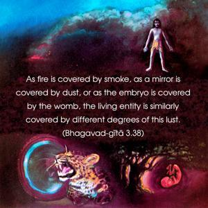
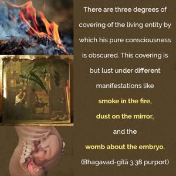
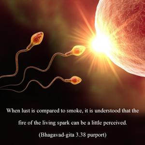
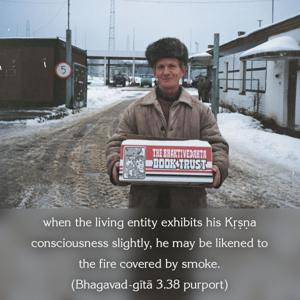
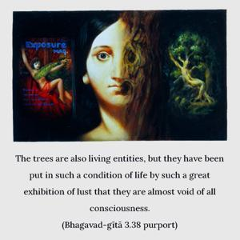

As fire is covered by smoke, as a mirror is covered by dust, or as the embryo is covered by the womb, the living entity is similarly covered by different degrees of this lust.





There are three degrees of covering of the living entity by which his pure consciousness is obscured. This covering is but lust under different manifestations like smoke in the fire, dust on the mirror, and the womb about the embryo. When lust is compared to smoke, it is understood that the fire of the living spark can be a little perceived. In other words, when the living entity exhibits his Kṛṣṇa consciousness slightly, he may be likened to the fire covered by smoke. Although fire is necessary where there is smoke, there is no overt manifestation of fire in the early stage. This stage is like the beginning of Kṛṣṇa consciousness. The dust on the mirror refers to a cleansing process of the mirror of the mind by so many spiritual methods. The best process is to chant the holy names of the Lord. The embryo covered by the womb is an analogy illustrating a helpless position, for the child in the womb is so helpless that he cannot even move. This stage of living condition can be compared to that of the trees. The trees are also living entities, but they have been put in such a condition of life by such a great exhibition of lust that they are almost void of all consciousness. The covered mirror is compared to the birds and beasts, and the smoke-covered fire is compared to the human being. In the form of a human being, the living entity may revive a little Kṛṣṇa consciousness, and, if he makes further development, the fire of spiritual life can be kindled in the human form of life. By careful handling of the smoke in the fire, fire can be made to blaze. Therefore the human form of life is a chance for the living entity to escape the entanglement of material existence. In the human form of life, one can conquer the enemy, lust, by cultivation of Kṛṣṇa consciousness under able guidance.